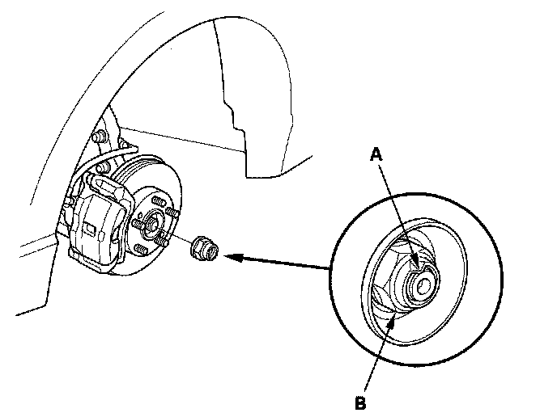
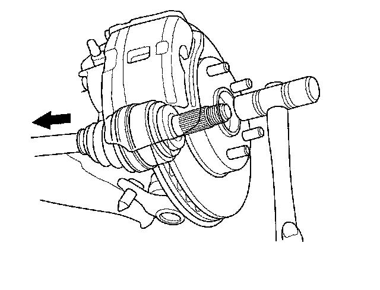
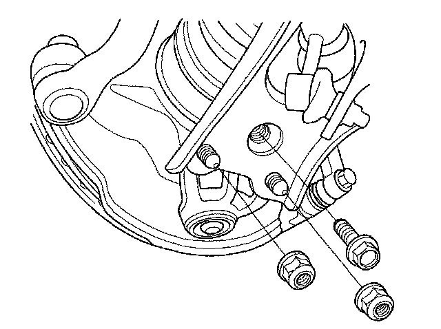
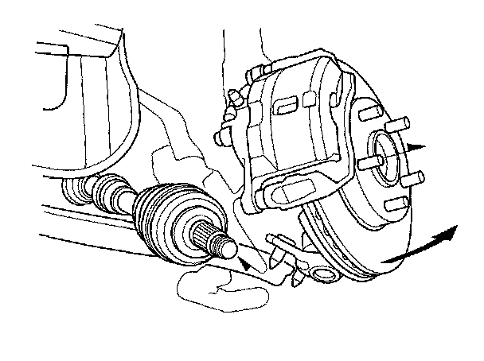
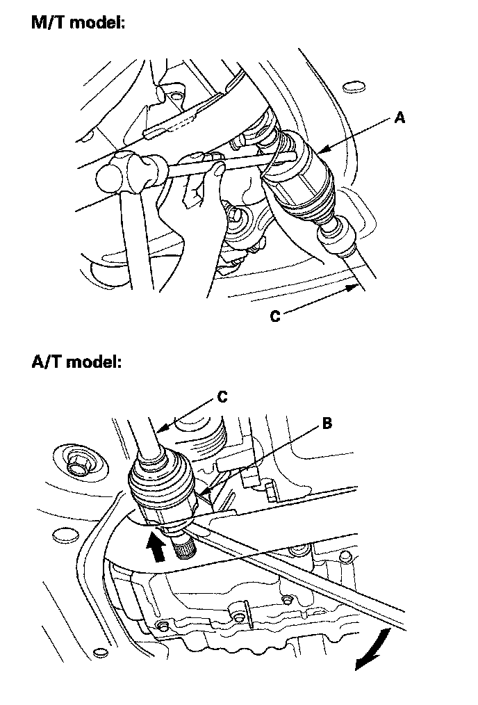
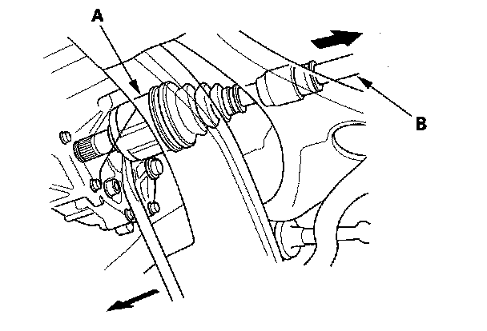

Driveshaft Removal
Driveshaft Removal1. Raise the vehicle on the hoist.
2. Remove the front wheels.
3. Lift up the locking tab (A) on the spindle nut (B), then remove the nut.

4. Drain the transmission fluid. Reinstall the drain plug with a new washer.
5. Remove the driveshaft outboard joint from the front wheel hub using a plastic hammer.

6. Remove the nuts and bolt, then separate the lower arm with a prybar.

7. Pull the knuckle outward, and remove the driveshaft outboard joint from the front wheel hub.

8. Right driveshaft: Drive the inboard joint (A) off of the intermediate shaft using a drift and hammer (M/T model). Pry the inboard joint (B) from the transmission housing with a prybar (A/T model). Remove the driveshaft as an assembly.
NOTE: Do not pull on the driveshaft (C) or the inboard joint may come apart. Pull the driveshaft straight out to avoid damaging the oil seal.

9. Left driveshaft: Pry the inboard joint (A) from the transmission housing with a prybar. Remove the driveshaft as an assembly.
NOTE: Do not pull on the driveshaft (B) or the inboard joint may come apart. Pull the driveshaft straight out to avoid damaging the oil seal.
